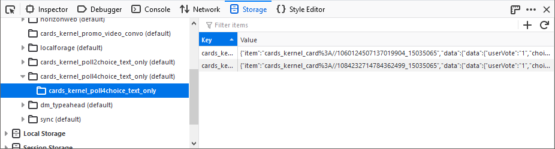
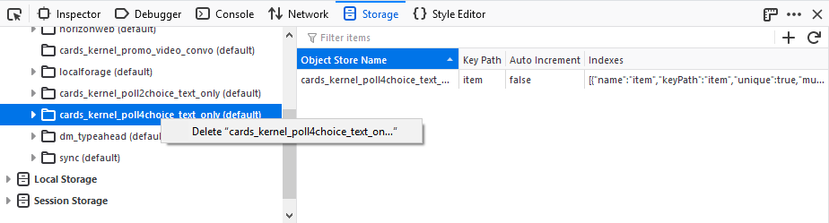
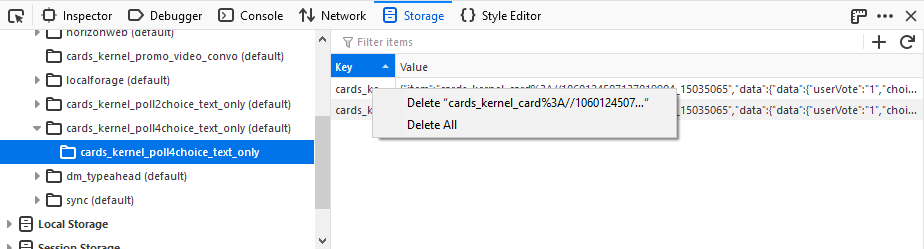

When you select an origin inside the Indexed DB storage type in the storage tree of the Storage Inspector, a table lists the details of all the databases present for that origin.
Note: The data shown in an IndexedDB database is a snapshot of the data as it was when you opened the Storage Inspector tool.
Databases have the following details:
When an IndexedDB database is selected in the storage tree, details about all the object stores are listed in the table. Any object store has the following details:

When an object store is selected in the storage tree, all the items in that object store are listed in the table. All items have a key and a value associated with them.
You can delete an IndexedDB database using the context menu in the storage tree:

If the database cannot be deleted (most commonly because there are still active connections to the database), a warning message will be displayed in the Storage Inspector:
You can use the context menu in the table widget to delete all items in an object store, or a particular item:
